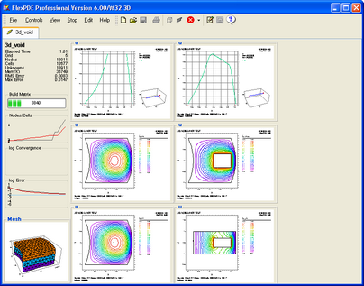
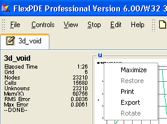
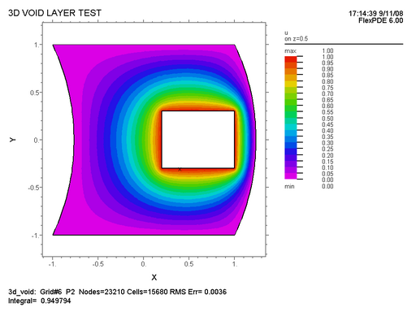
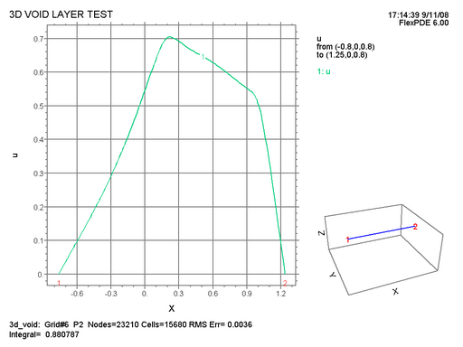

|
While the Problem Runs |

  
|
|
While the Problem Runs |
|
Whether you click "Run" or proceed through the "Domain Review", once the problem begins running, the icon on the problem tab will change from the edit icon () to the Run icon (). The screen will look something like this:

On the left is the "Status Panel", which presents an active report of the state of the problem execution. It contains a text based report, a progress bar for the current operation, several history plots summarizing the activity, and a "Thumbnail" window of the current computational grid.
The history plots are new in version 6. They summarize the number of nodes/cells in the mesh, the convergence of the current solver, the error estimates for the solution, and the current time step (in the case of time dependent problems).
The format of the printed data will depend upon the kind of problem, but the common features will be:
| • | The elapsed computer time charged to this problem. |
| • | The current regrid number. |
| • | The number of computation Nodes. |
| • | The number of Finite Element Cells. |
| • | The number of Unknowns (nodes times variables). |
| • | The amount of memory allocated for working storage (in KiloBytes). |
| • | The current estimate of RMS (root-mean-square) spatial error. |
| • | The current estimate of Maximum spatial error in any cell. |
Other items which may appear are:
| • | The current problem time and timestep |
| • | The stage number |
| • | The RMS Solution error for the most recent iteration |
| • | The iteration count |
| • | The convergence status of the current iteration |
| • | A report of the current activity |
On the right side of the screen are separate "Thumbnail" windows for each of the PLOTS or MONITORS requested by the descriptor.
In steady-state problems, only MONITORS will be displayed during the run. They will be replaced by PLOTS when the solution is complete.
In time-dependent problems, all MONITORS and PLOTS will be displayed simultaneously, and updated as the sequencing specifications of the descriptor dictate.
PLOTS will be sent to the ".pg6" graphic record on disk for later recovery. MONITORS will not.
In eigenvalue problems, there will be one set of MONITORS or PLOTS for each requested mode. In other respects, eigenvalue problems behave as steady-state problems.
A right-click in any "thumbnail" plot brings up a menu from which several options can be selected:

The menu items are:
Causes the selected plot to be expanded to fill the display panel. You can also maximize a thumbnail by double-clicking in the selected plot.
Causes a maximized plot to be returned to thumbnail size.
Sends the window to the printer using a standard Print dialog.
Invokes a dialog which allows the selection of a format for exporting the plot in standard format to other processes. Currently, the options are BMP, EMF, EPS, PNG, PPG and XPG. For bitmap formats (BMP, PNG, PPG and XPG) the dialog allows the selection of the drawing linewidth and resolution of the bitmap, independent of the resolution of the screen. For vector formats (EMF, EPS) no resolution is necessary (FlexPDE uses a fixed resolution of 5400x7200). EPS produces an 8.5x11 inch landscape mode PostScript file suitable for printing.
3D plots can be rotated in polar and azimuthal angle.
A typical CONTOUR plot might appear as follows:

At the top of the display the "Title" field from the problem descriptor appears, with the time and date of problem execution at the right corner, along with the version of FlexPDE which performed the computation.
At the bottom of the page is a summary of the problem statistics, similar to that shown in the Status Window:
| • | The problem name |
| • | The number of gridding cycles performed so far |
| • | The polynomial order of the Finite-Element basis (p2 = quadratic, p3 = cubic) |
| • | The number of computation nodes |
| • | The number of computation cells |
| • | The estimated RMS value of the relative error in the variables |
In staged problems, the stage number will be reported.
In eigenvalue problems, the mode number will be reported.
In time dependent problems, the current problem time and timestep will be reported.
By default, FlexPDE computes the integral under the displayed curve, and this value is reported as "Integral".
Any requested REPORTS will appear in the bottom line.
A typical ELEVATION plot might appear as follows:

Here all the labeling of the contour plot appears, as well as a thumbnail plot of the problem domain, showing the position of the elevation in the figure. For boundary plots, the joints of the boundary are numbered on the thumbnail. The numbers also appear along the baseline of the elevation plot for positional reference.
While the problem is running, you can return the display panel to the editor mode by clicking the Edit Script tool () or the Show Editor item in the Controls menu. The Run icon () will continue to be displayed in the problem tab as long as the problem is running. When the problem terminates, the problem tab will again display the Edit icon ().
You can return to the graphic display panel by clicking the Show Plots tool () or the Show Plots item in the Controls menu.
Page url: index.html?running.html